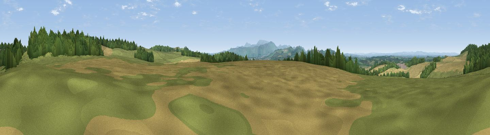

viewpoint – just north of Hay Farm
#14408 in England · top 53% of its area beats it · near FordWhere it is
The exact computed spot (NT 94814 38710). Click the marker for map links.
The view, rendered

A 360° render of this exact spot computed from the terrain model, tree cover and land cover — summer colours, afternoon light, calibrated against photographs of famous viewpoints. Real trees, hedges and buildings will differ in detail.
The panorama
Grey silhouette: terrain skyline in each direction (720 bearings, Earth curvature and refraction included). Dashed green: skyline with trees (+15 m) and buildings (+8 m) as obstacles. Blue strip: how far the ground is visible on each bearing.
Where the view opens
Wedge length = distance to the farthest visible ground on that bearing (vegetation-aware). Rings at 10, 25 and 50 km.
What fills the view
40% grassland · 36% cropland · 24% woodland ·
Angular shares of the visible panorama (visual magnitude), not map area. Landscape diversity 0.48 (0–1 Shannon).
Key numbers
More beautiful places nearby
The staircase of upgrades: each row has a higher view potential than everything closer. Driving times are estimates from straight-line distance, calibrated against real road routing — check an actual route before setting out.
| Place | Direction | Drive | Score |
|---|---|---|---|
| Viewpoint near Etal | NNW · 1 km | ~4 min | 72.1 |
| Viewpoint near Ford | SE · 2 km | ~6 min | 74.9 |
| Viewpoint near Doddington | SE · 5 km | ~11 min | 80.3 |
| Housedon Hill | SW · 7 km | ~15 min | 80.5 |
| Moneylaws Hill | WSW · 9 km | ~17 min | 83.0 |
| Viewpoint near Kirknewton | S · 9 km | ~19 min | 86.1 |
| Greensheen Hill | ESE · 11 km | ~21 min | 87.5 |
| Viewpoint near Chillingham | SE · 19 km | ~32 min | 88.1 |
55.64191, -2.08395 · source: osm viewpoint · position refined by local search. Computed location — check access rights before visiting.